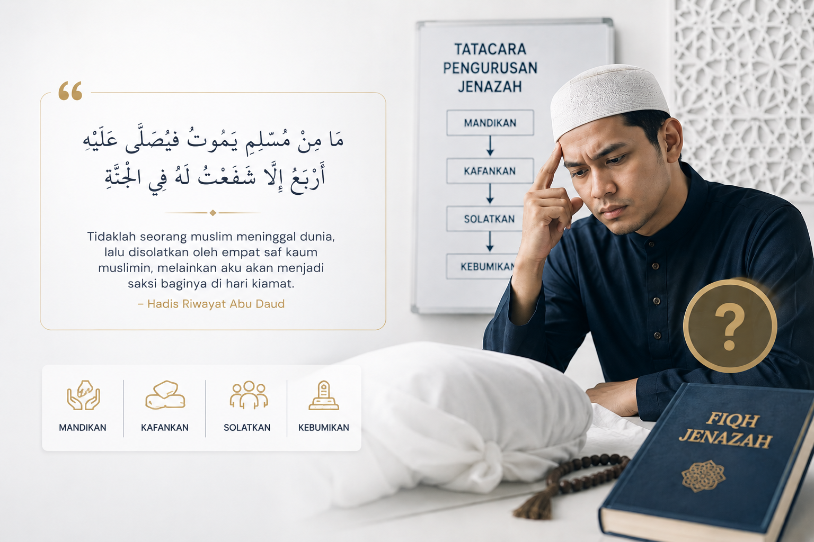
Kefahaman Asas Tidak Menyeluruh
Ramai masih belum memahami tatacara pengurusan jenazah secara tertib dan sah dari sudut syariah.
Platform Rasmi Ustaz Undertaker
Platform rasmi Ustaz Muhammad Rafieudin bin Zainal Rasid dalam perkongsian ilmu fiqh kematian, pengurusan jenazah, embalming dan pengalaman lapangan secara profesional serta berteraskan syariah.
Cabaran Semasa Masyarakat

Ramai masih belum memahami tatacara pengurusan jenazah secara tertib dan sah dari sudut syariah.
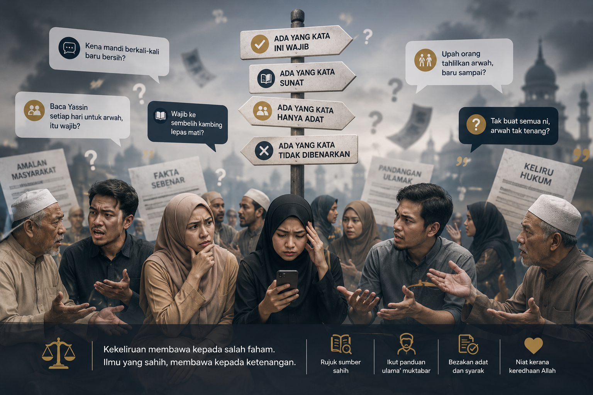
Isu hukum dan adab selepas kematian sering bercampur antara amalan, adat dan fakta yang tidak tepat.
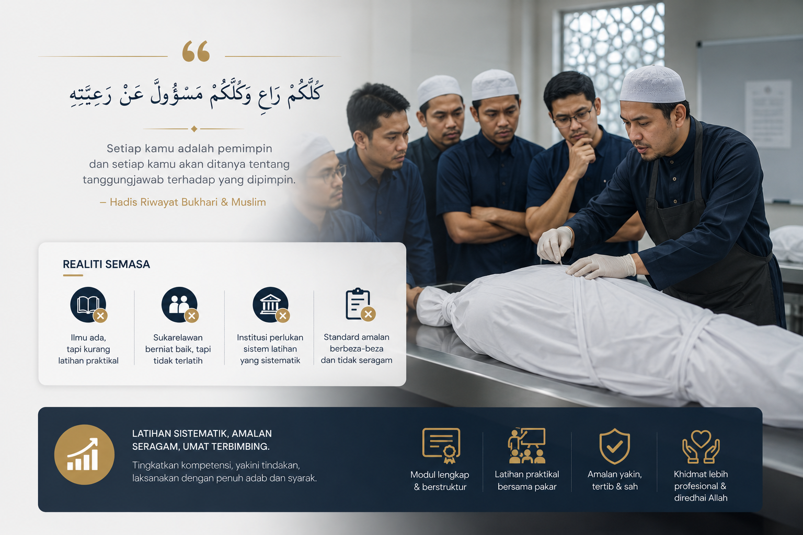
Keperluan latihan praktikal yang sistematik masih tinggi bagi komuniti, institusi dan sukarelawan.
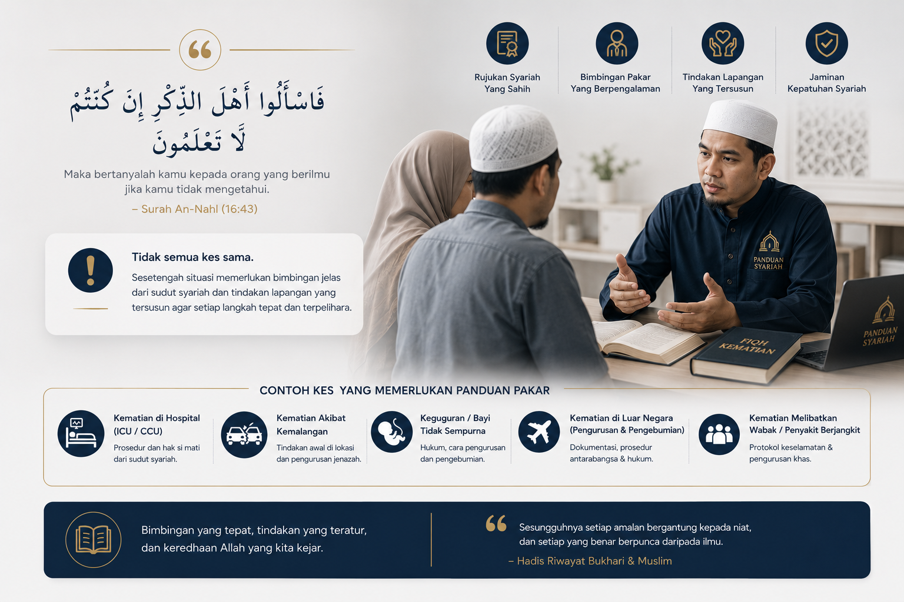
Sesetengah situasi memerlukan bimbingan jelas dari sudut syariah dan tindakan lapangan yang tersusun.
Pendekatan & Matlamat
Ustaz Rafie membawa pendekatan yang seimbang antara disiplin akademik, pengalaman operasi lapangan, dan dakwah berfasa agar masyarakat, institusi, serta organisasi dapat mengurus amanah kematian dengan lebih yakin, tersusun dan memelihara maruah jenazah.
Profil Ustaz Rafie
Ustaz Muhammad Rafieudin Bin Zainal Rasid dikenali sebagai figura rujukan dalam pengurusan jenazah di Malaysia melalui pendekatan ilmu yang tenang, profesional dan jelas. Perkongsian beliau merangkumi kefahaman fiqh kematian, latihan lapangan berstruktur serta bimbingan berterusan kepada institusi dan komuniti agar amanah pengurusan jenazah dapat dilaksanakan dengan tertib, beradab dan menepati tuntutan syariah.
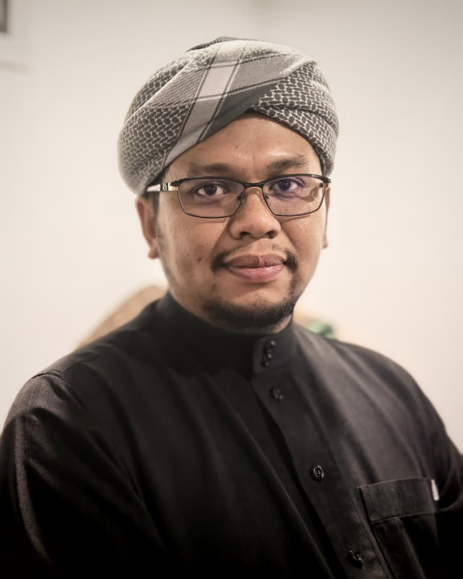
Perkhidmatan Utama
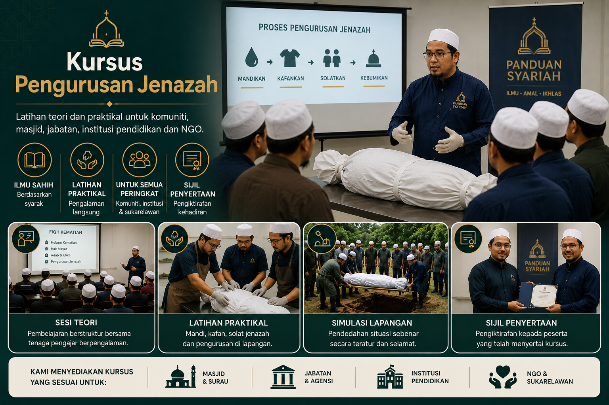
Latihan teori dan praktikal untuk komuniti, masjid, jabatan, institusi pendidikan dan NGO.
WhatsApp: Maklumat Kursus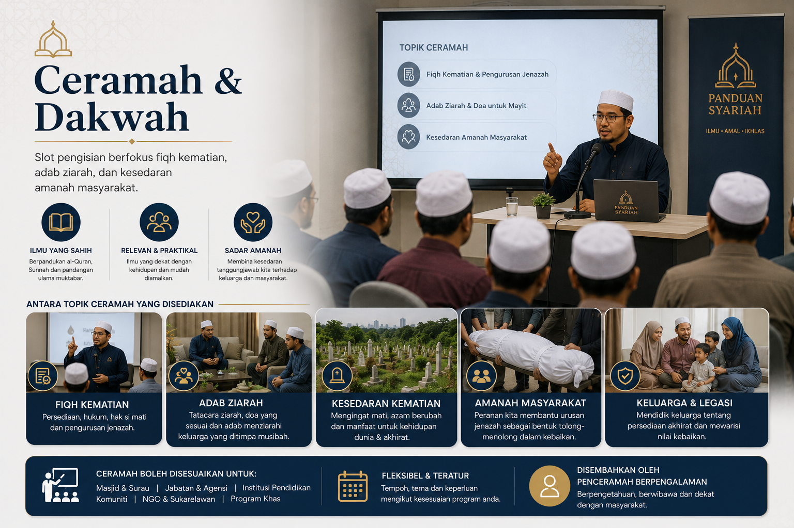
Slot pengisian berfokus fiqh kematian, adab ziarah, dan kesedaran amanah masyarakat.
WhatsApp: Jemput Ceramah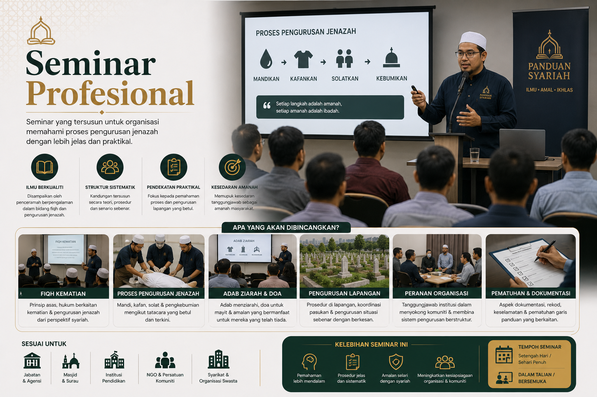
Seminar yang tersusun untuk organisasi memahami proses pengurusan jenazah dengan lebih jelas dan praktikal.
WhatsApp: Maklumat Seminar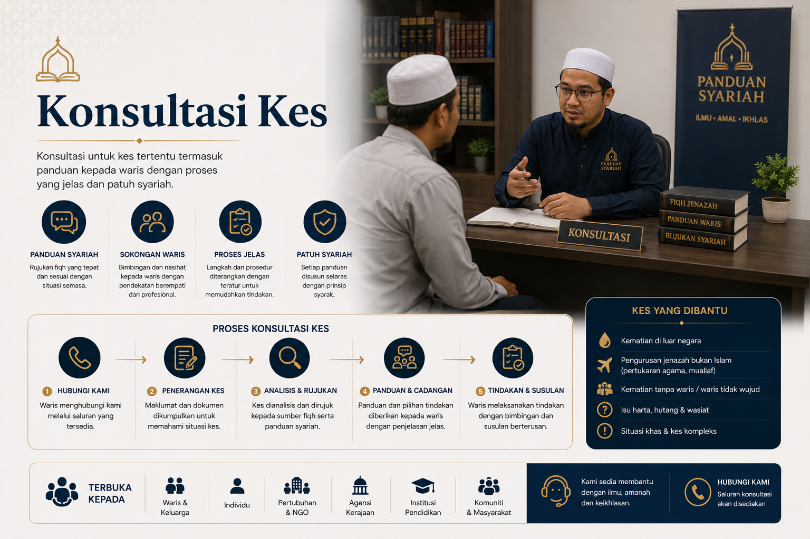
Konsultasi untuk kes tertentu termasuk panduan kepada waris dengan proses yang jelas dan patuh syariah.
WhatsApp: Mohon Konsultasi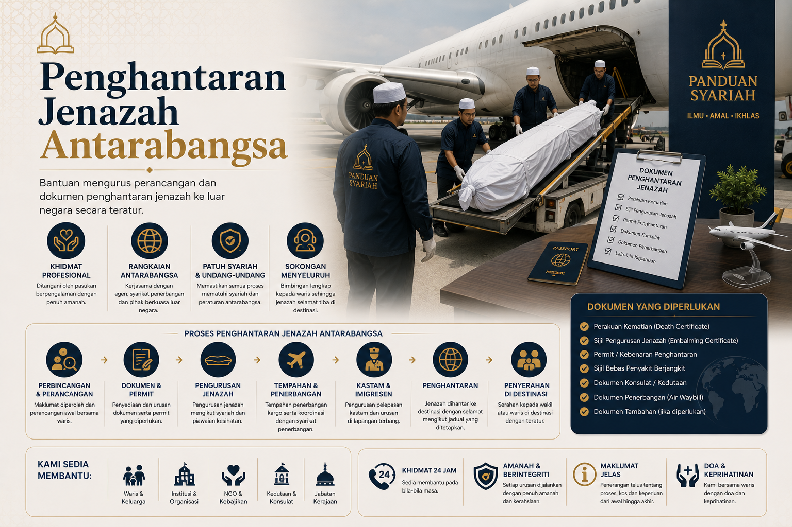
Bantuan mengurus perancangan dan dokumen penghantaran jenazah ke luar negara secara teratur.
WhatsApp: Maklumat Penghantaran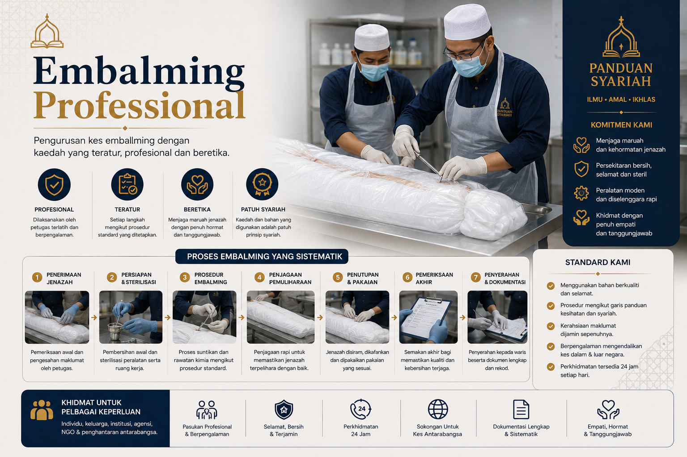
Pengurusan kes embalming dengan kaedah yang teratur, profesional dan beretika.
WhatsApp: Maklumat EmbalmingArtikel & Perkongsian
Testimoni
“Penyampaian sangat tersusun, beradab dan jelas. Pasukan kami kini lebih yakin menguruskan amanah jenazah dengan tertib.”
Pengurusan Masjid, Selangor“Kursus ini menggabungkan fiqh dan realiti semasa. Sangat membantu untuk petugas lapangan dan sukarelawan komuniti.”
Penyelaras NGO, Kuala Lumpur“Pendekatan profesional tanpa sensasi. Fokus kepada ilmu, etika kerja dan tanggungjawab kepada waris.”
Peserta Seminar, Johor“Modul latihan sangat praktikal dan mudah difahami oleh petugas masjid. Banyak perkara penting yang selama ini kami terlepas pandang.”
AJK Pengurusan Masjid, Perak“Sesi konsultasi membantu kami urus kes dengan lebih tenang. Panduan yang diberikan jelas, berperingkat dan menghormati keperluan waris.”
Pegawai Hal Ehwal Islam, Negeri Sembilan“Program ini sangat sesuai untuk komuniti kerana bahasanya mudah, namun tetap mengekalkan ketepatan fiqh dan standard kerja profesional.”
Pengerusi Surau, Kuala LumpurFAQ
Ya. Kursus terbuka kepada individu, komuniti, institusi pendidikan, masjid, organisasi dan agensi. Modul disusun secara berperingkat supaya peserta yang baru bermula juga dapat memahami asas fiqh, adab pengurusan jenazah dan aplikasi praktikal dengan lebih yakin.
Boleh. Jemputan ceramah, kuliah khas atau seminar boleh diatur mengikut keperluan penganjur dari segi tema, tempoh sesi dan sasaran peserta. Kandungan boleh difokuskan kepada fiqh kematian, kesedaran komuniti atau pengukuhan pasukan pengurusan jenazah.
Ya, sijil penyertaan boleh disediakan bagi program yang dipersetujui bersama pihak penganjur. Keperluan seperti format sijil, syarat kehadiran dan pengesahan peserta akan diselaraskan lebih awal supaya proses dokumentasi berjalan teratur.
Ya. Semua pengisian dan pengendalian kes disampaikan berdasarkan panduan syariah, tertib fiqh dan adab pengurusan jenazah yang betul. Pendekatan ini memastikan kefahaman peserta bukan sekadar teori, tetapi boleh diamalkan dengan tertib dalam situasi sebenar.
Ada. Konsultasi disediakan untuk kes tertentu, perancangan latihan serta penyelarasan operasi pengurusan jenazah mengikut konteks organisasi atau komuniti. Perbincangan dibuat secara terarah supaya keputusan yang diambil jelas, praktikal dan mematuhi syariah.
Hubungi terus melalui WhatsApp rasmi untuk respon yang lebih pantas berkaitan jemputan ceramah, kursus, konsultasi atau pertanyaan perkhidmatan: wa.me/60179851090.
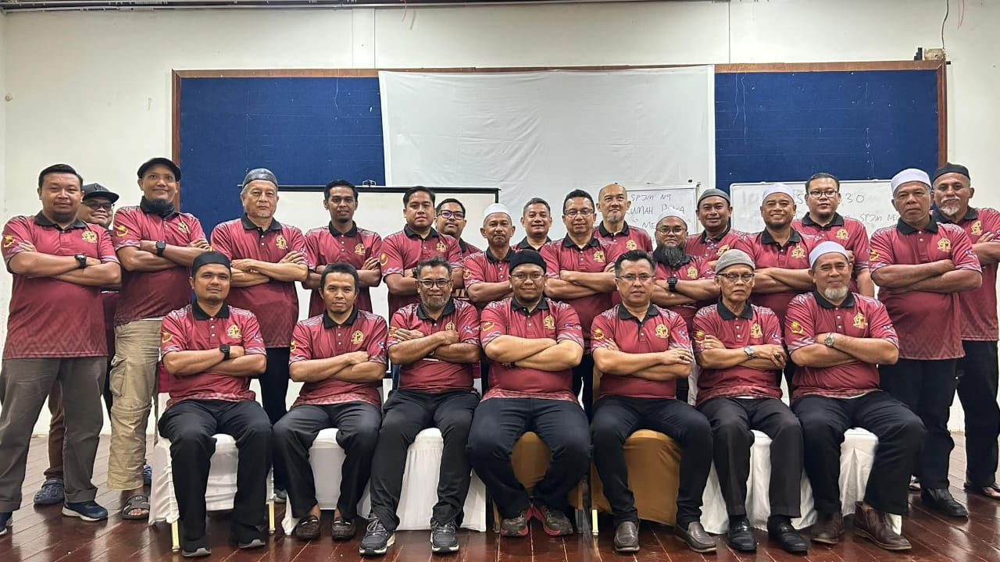
Hubungi Kami
Hubungi kami untuk jemputan ceramah, kursus, seminar, konsultasi atau maklumat lanjut perkhidmatan.